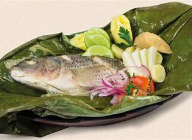
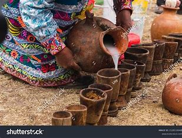
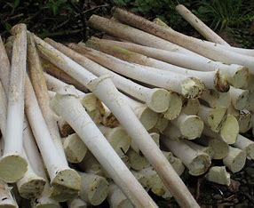
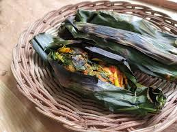

Recetas del Oriente Ecuatoriano
Platos Tradicionales
-

Maito de pescado: un plato tradicional envuelto en hojas de bijao.
-
 Sopa de yuca: una deliciosa sopa espesa hecha con yuca.
Sopa de yuca: una deliciosa sopa espesa hecha con yuca.
-
 Chontacuro asado: gusanos comestibles asados, ricos en proteínas.
Chontacuro asado: gusanos comestibles asados, ricos en proteínas.
-

Chicha de yuca: una bebida fermentada, tradicional de la región.
-

Ensalada de palmito: una ensalada fresca y nutritiva hecha con palmito.
-

Ayampaco: un plato preparado con carne o pescado envuelto en hojas de bijao.
Bebidas Típicas
-
Guayusa: Una bebida energética tradicional hecha con hojas de guayusa.
-
Chicha de plátano: Bebida fermentada hecha a base de plátano maduro.
-
Aguaje: Jugo hecho con los frutos del aguaje, refrescante y nutritivo.
Postres Típicos
-
Helado de arazá: Un postre helado hecho con frutas exóticas de la región.
-
Chontaduro cocido: Una fruta hervida que se sirve con miel o sal.
-
Plátano maduro asado: Plátano maduro asado y servido con queso fresco.